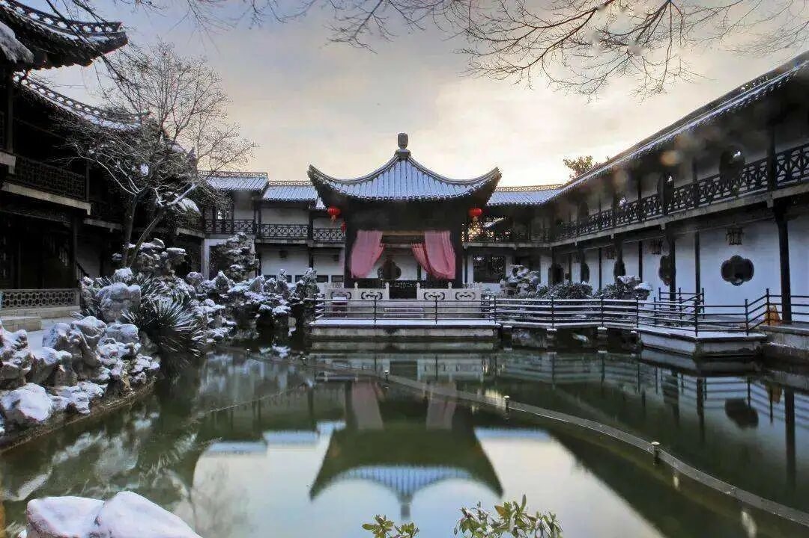
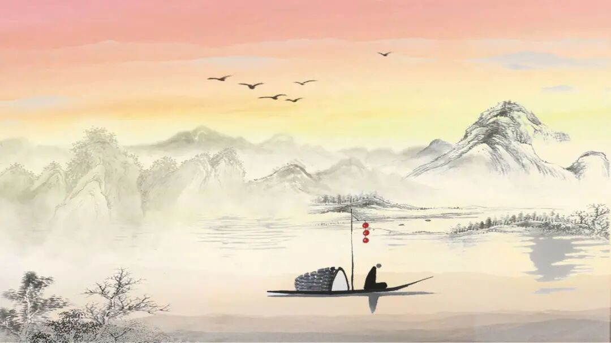
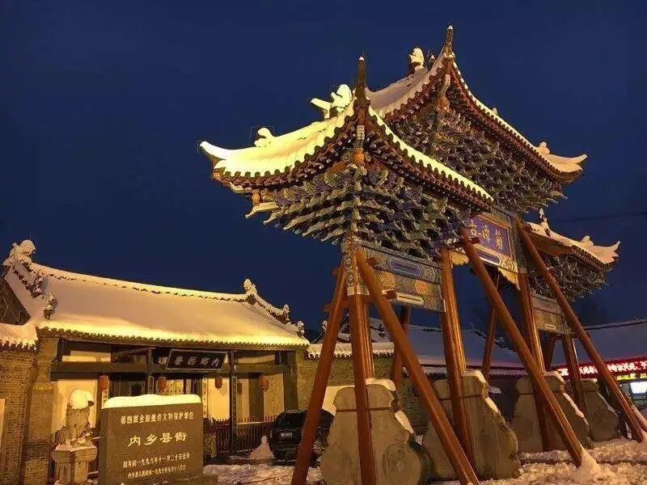

山水总相逢

山水总相逢

“
今番良晤，豪兴不浅，
他日江湖相逢，再当杯酒言欢，咱们就此别过。
”
01
天下三分明月夜
二分无赖是扬州
与广陵的再次相遇，像是老朋友的久别重逢。与运河对望，她亲切地同我讲起码头人声鼎沸、上传来来往往，广陵像她的孩子一样，是运河看着扬州一天天成长，扬州因运河而生，也因运河而兴，得天独厚的地理优势使孕育出富甲一方的扬州盐商，经济繁荣更为文化发展提供沃土，扬州的园林艺术、扬州八怪、瘦西湖、扬州美食皆与扬州盐商密不可分。看尽淮左好景，同老友告别，启程感受豫南佳韵。
02

南都信佳丽
舞阙横西关
这片养育我的土地总是沉默寡言、不卑不亢，作为丹江渡口与商於古道交汇处、昔日的南都人来车往好不热闹。这里曾写下无数故事，刘备在这里三顾茅庐、李白于此与岑夫子、丹丘生对坐畅饮……而今天遥望内乡县衙的白砖黑瓦，抚过黄土陈沙下的陶土碎瓷，仿佛穿越华夏千年时空，跟随他们感受豫南千年间风起云落。踏过隆冬瑞雪，拂去袖上黄沙，行者们又沿丝绸之路来到陇右。
03
山丹素有“丝路咽喉”之称，是河西走廊至关重要的一环，千百年来，朔风黄沙中无数商队来往，丝丝驼铃阵阵梵音，共同见证山丹成为一个集商贸枢纽、军事要塞、文化交融的圣地于一身的城市，它们堆砌出山丹的神秘而滚烫灵魂，吸引着一批又一批行者探访。河西走廊风沙飞扬车马不停，丝绸之路的商贸往来也种下文化交融的种子，使我们跨越国家和民族而心紧紧相连。
运河的水奔流而过，个园的花谢了又开，乘白帆远扬，遥望古村飘扬的陶烟，在百年风吹雨淋的白砖前驻足，再自南船北马的商於古道启程，踏上大漠之旅，车马、长城、商队、关塞，岁月划破旅人的指尖，使荡气回肠的故事滴落在茫茫黄沙之中，随风而去。

来源 | 行者无疆实践团
文字 | 胡心怡
排版 | 夏骏
审核 | 温兆琪 朱华玮